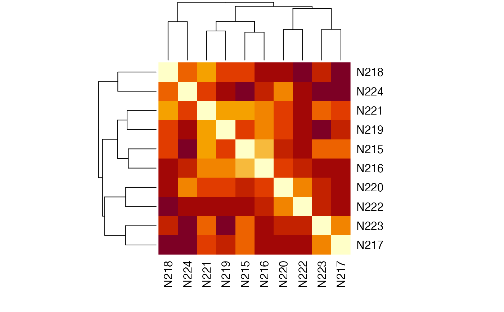
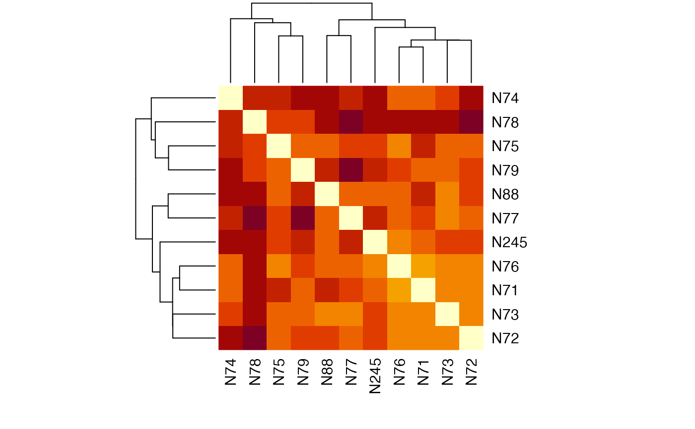
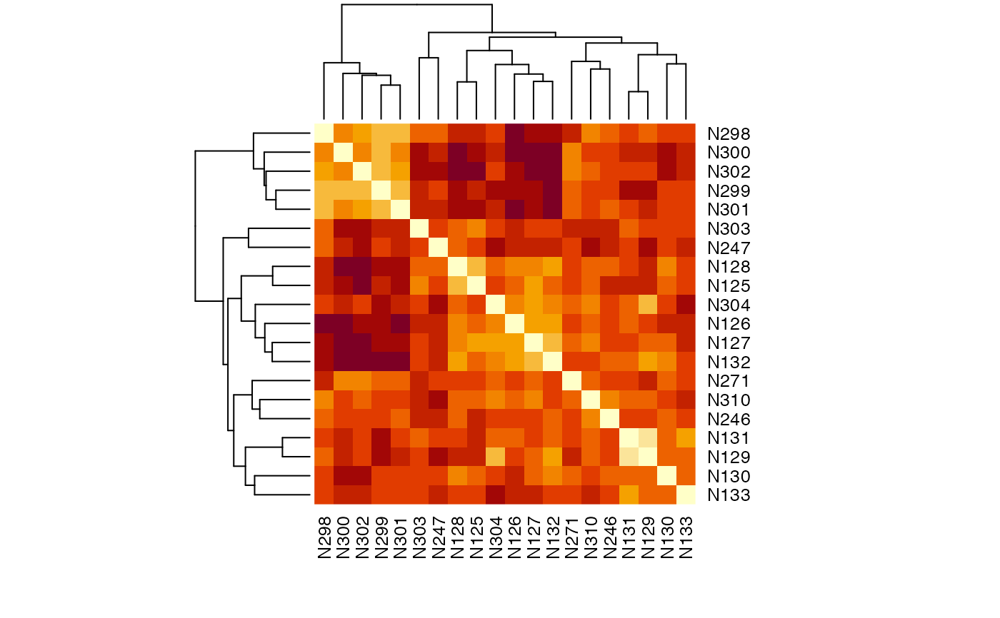
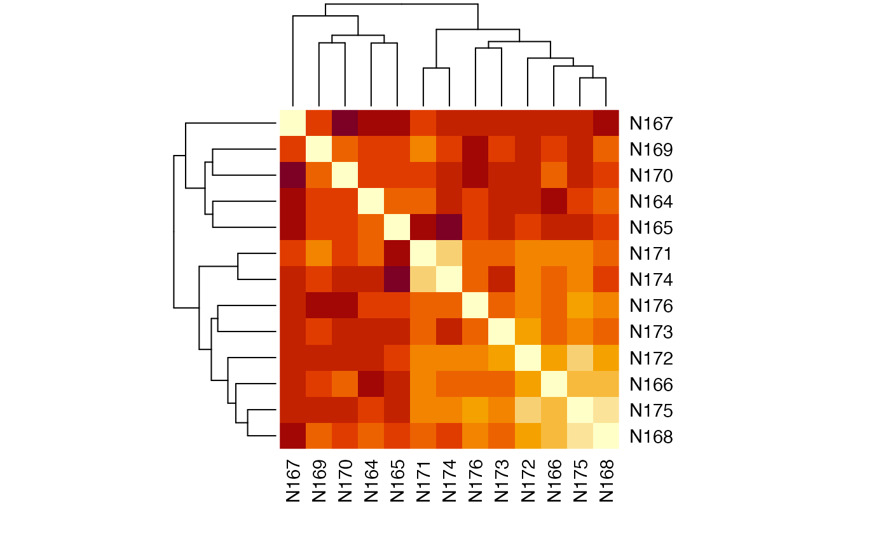
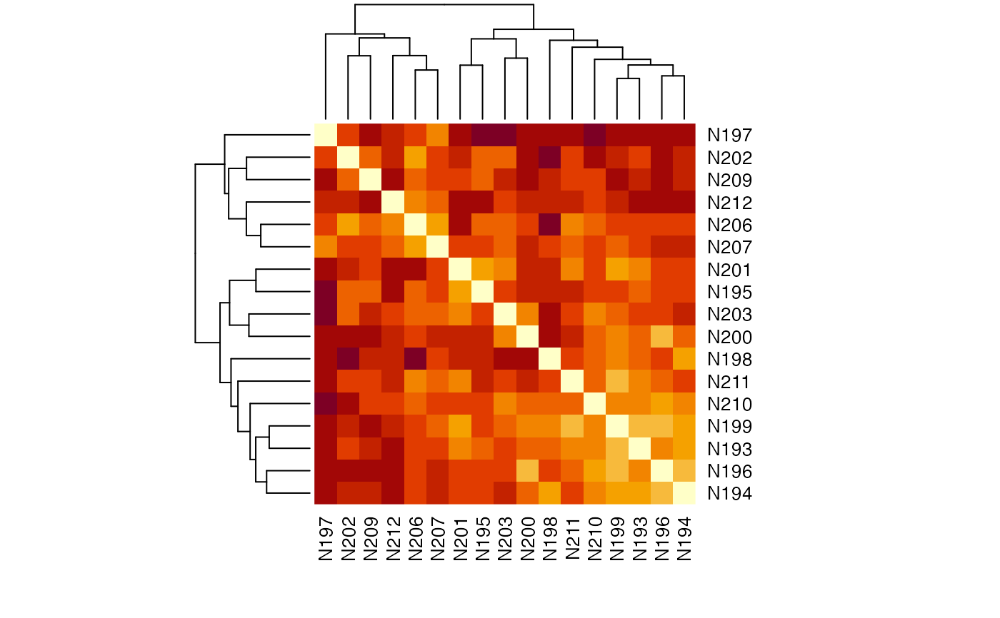
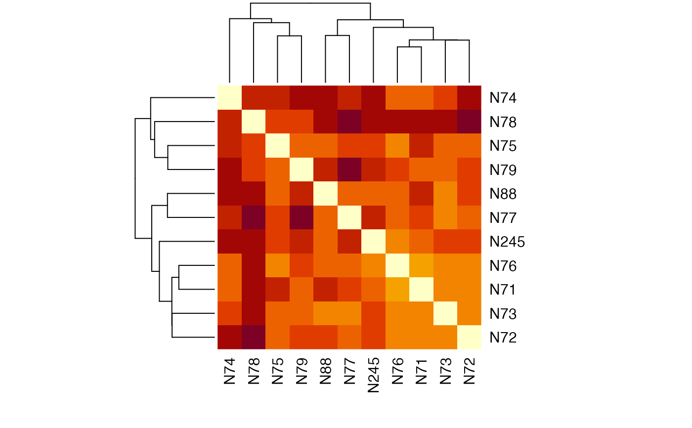
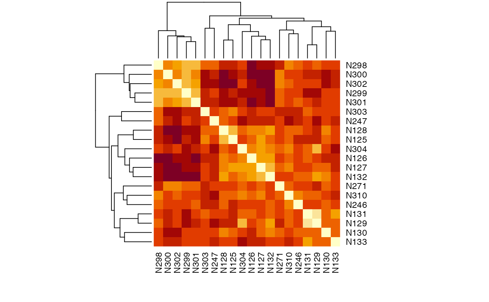
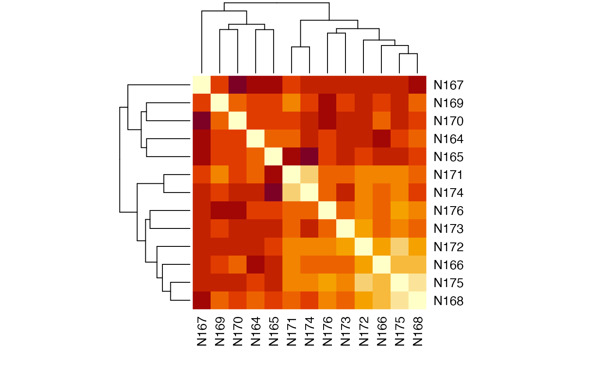
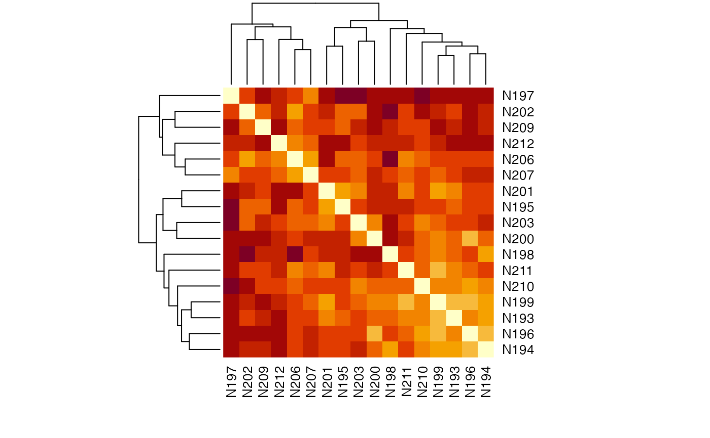

Calculate the average Bruvo's distance over all loci in a population.
Usage
bruvo.dist(pop, replen = 1, add = TRUE, loss = TRUE, by_locus = FALSE)
bruvo.between(
query,
ref,
replen = 1,
add = TRUE,
loss = TRUE,
by_locus = FALSE
)Arguments
- pop
- replen
a
vectorofintegersindicating the length of the nucleotide repeats for each microsatellite locus. E.g. a locus with a (CAT) repeat would have a replen value of 3. (Also seefix_replen)- add
if
TRUE, genotypes with zero values will be treated under the genome addition model presented in Bruvo et al. 2004. See the Note section for options.- loss
if
TRUE, genotypes with zero values will be treated under the genome loss model presented in Bruvo et al. 2004. See the Note section for options.- by_locus
indicator to get the results per locus. The default setting is
by_locus = FALSE, indicating that Bruvo's distance is to be averaged over all loci. Whenby_locus = TRUE, a list of distance matrices will be returned.- query
- ref
Details
Bruvo's distance between two alleles is calculated as
$$d = 1 - 2^{-\mid x \mid}$$, where x
is the number of repeat units between the two alleles (see the Algorithms
and Equations vignette for more details). These distances are calculated
over all combinations of alleles at a locus and then the minimum average
distance between allele combinations is taken as the distance for that
locus. All loci are then averaged over to obtain the distance between two
samples. Missing data is ignored (in the same fashion as
mean(c(1:9, NA), na.rm = TRUE)) if all alleles are missing. See the
next section for other cases.
Polyploids
Ploidy is irrelevant with respect to calculation of Bruvo's distance. However, since it makes a comparison between all alleles at a locus, it only makes sense that the two loci need to have the same ploidy level. Unfortunately for polyploids, it's often difficult to fully separate distinct alleles at each locus, so you end up with genotypes that appear to have a lower ploidy level than the organism.
To help deal with these situations, Bruvo has suggested three methods for dealing with these differences in ploidy levels:
Infinite Model - The simplest way to deal with it is to count all missing alleles as infinitely large so that the distance between it and anything else is 1. Aside from this being computationally simple, it will tend to inflate distances between individuals.
Genome Addition Model - If it is suspected that the organism has gone through a recent genome expansion, the missing alleles will be replace with all possible combinations of the observed alleles in the shorter genotype. For example, if there is a genotype of [69, 70, 0, 0] where 0 is a missing allele, the possible combinations are: [69, 70, 69, 69], [69, 70, 69, 70], [69, 70, 70, 69], and [69, 70, 70, 70]. The resulting distances are then averaged over the number of comparisons.
Genome Loss Model - This is similar to the genome addition model, except that it assumes that there was a recent genome reduction event and uses the observed values in the full genotype to fill the missing values in the short genotype. As with the Genome Addition Model, the resulting distances are averaged over the number of comparisons.
Combination Model - Combine and average the genome addition and loss models.
As mentioned above, the infinite model is biased, but it is not nearly as computationally intensive as either of the other models. The reason for this is that both of the addition and loss models requires replacement of alleles and recalculation of Bruvo's distance. The number of replacements required is equal to n^k where where n is the number of potential replacements and k is the number of alleles to be replaced. To reduce the number of calculations and assumptions otherwise, Bruvo's distance will be calculated using the largest observed ploidy in pairwise comparisons. This means that when comparing [69,70,71,0] and [59,60,0,0], they will be treated as triploids.
Functions
bruvo.between(): Bruvo's distance between a query and a reference Only diferences between query individuals and reference individuals will be reported All other values are NaN
Note
Do not use missingno with this function.
Missing alleles and Bruvo's distance in poppr versions < 2.5
In earlier versions of poppr, the authors had assumed that, because the calculation of Bruvo's distance does not rely on orderd sets of alleles, the imputation methods in the genome addition and genome loss models would also assume unordered alleles for creating the hypothetical genotypes. This means that the results from this imputation did not consider all possible combinations of alleles, resulting in either an over- or under- estimation of Bruvo's distance between two samples with two or more missing alleles. This version of poppr considers all possible combinations when calculating Bruvo's distance for incomplete genotype with a negligable gain in computation time.
If you want to see the effect of this change on your data, you can use the
global poppr option old.bruvo.model. Currently, this option is
FALSE and you can set it by using
options(old.bruvo.model = TRUE), but make sure to reset it to
FALSE afterwards.
Repeat Lengths (replen)
The replen argument is crucial for proper analysis of Bruvo's
distance since the calculation relies on the knowledge of the number of
steps between alleles. To calculate Bruvo's distance, your raw allele calls
are first divided by the repeat lengths and then rounded. This can create a
problem with repeat lengths of even size due to the IEC 60559 standard that
says rounding at 0.5 is to the nearest even number, meaning that it is
possible for two alleles that are one step apart may appear to be exactly
the same. This can be fixed by subtracting a tiny number from the repeat
length with the function fix_replen. Please consider using
this before running Bruvo's distance.
Model Choice
The add and loss arguments
modify the model choice accordingly:
Infinite Model:
add = FALSE, loss = FALSEGenome Addition Model:
add = TRUE, loss = FALSEGenome Loss Model:
add = FALSE, loss = TRUECombination Model (DEFAULT):
add = TRUE, loss = TRUE
Details of each model
choice are described in the Details section, above. Additionally,
genotypes containing all missing values at a locus will return a value of
NA and not contribute to the average across loci.
References
Ruzica Bruvo, Nicolaas K. Michiels, Thomas G. D'Souza, and Hinrich Schulenburg. A simple method for the calculation of microsatellite genotype distances irrespective of ploidy level. Molecular Ecology, 13(7):2101-2106, 2004.
Examples
# Please note that the data presented is assuming that the nancycat dataset
# contains all dinucleotide repeats, it most likely is not an accurate
# representation of the data.
# Load the nancycats dataset and construct the repeat vector.
data(nancycats)
names(alleles(nancycats)) <- locNames(nancycats) # small bug in this data set
# Assume the alleles are all dinucleotide repeats.
ssr <- rep(2, nLoc(nancycats))
test_replen(nancycats, ssr) # Are the repeat lengths consistent?
#> fca8 fca23 fca43 fca45 fca77 fca78 fca90 fca96 fca37
#> FALSE TRUE FALSE TRUE TRUE TRUE FALSE FALSE TRUE
(ssr <- fix_replen(nancycats, ssr)) # Nope. We need to fix them.
#> fca8 fca23 fca43 fca45 fca77 fca78 fca90 fca96 fca37
#> 1.99999 2.00000 1.99999 2.00000 2.00000 2.00000 1.99999 1.99999 2.00000
# Analyze the first population in nancycats
bruvo.dist(popsub(nancycats, 1), replen = ssr)
#> N215 N216 N217 N218 N219 N220 N221
#> N216 0.2377930
#> N217 0.3359375 0.5029297
#> N218 0.4062195 0.5033875 0.5590007
#> N219 0.3964844 0.2929688 0.4600694 0.3940701
#> N220 0.4491882 0.3984070 0.4947645 0.5104167 0.4114312
#> N221 0.2617188 0.3217773 0.4288194 0.2603895 0.2517361 0.4110243
#> N222 0.4882202 0.4784546 0.5086263 0.5360243 0.4912652 0.2968479 0.4821777
#> N223 0.3789062 0.5166016 0.3142361 0.4444173 0.5451389 0.4769965 0.3541667
#> N224 0.5483093 0.4784851 0.5741916 0.3680556 0.4787055 0.3224826 0.3953722
#> N222 N223
#> N216
#> N217
#> N218
#> N219
#> N220
#> N221
#> N222
#> N223 0.4353027
#> N224 0.4956597 0.5307888
# \dontrun{
# get the per locus estimates:
bruvo.dist(popsub(nancycats, 1), replen = ssr, by_locus = TRUE)
#> $fca8
#> N215 N216 N217 N218 N219 N220 N221 N222
#> N216 NA
#> N217 NA NA
#> N218 NA NA 0.484375
#> N219 NA NA 0.484375 0.000000
#> N220 NA NA 0.000000 0.484375 0.484375
#> N221 NA NA 0.468750 0.250000 0.250000 0.468750
#> N222 NA NA 0.000000 0.484375 0.484375 0.000000 0.468750
#> N223 NA NA 0.250000 0.734375 0.734375 0.250000 0.718750 0.250000
#> N224 NA NA 0.468750 0.250000 0.250000 0.468750 0.000000 0.468750
#> N223
#> N216
#> N217
#> N218
#> N219
#> N220
#> N221
#> N222
#> N223
#> N224 0.718750
#>
#> $fca23
#> N215 N216 N217 N218 N219 N220 N221
#> N216 0.4843750
#> N217 0.0000000 0.4843750
#> N218 0.7187500 0.9375000 0.7187500
#> N219 0.3750000 0.4375000 0.3750000 0.7187500
#> N220 0.0000000 0.4843750 0.0000000 0.7187500 0.3750000
#> N221 0.0000000 0.4843750 0.0000000 0.7187500 0.3750000 0.0000000
#> N222 0.0000000 0.4843750 0.0000000 0.7187500 0.3750000 0.0000000 0.0000000
#> N223 0.0000000 0.4843750 0.0000000 0.7187500 0.3750000 0.0000000 0.0000000
#> N224 0.8710938 0.9921875 0.8710938 0.8750000 0.9648438 0.8710938 0.8710938
#> N222 N223
#> N216
#> N217
#> N218
#> N219
#> N220
#> N221
#> N222
#> N223 0.0000000
#> N224 0.8710938 0.8710938
#>
#> $fca43
#> N215 N216 N217 N218 N219 N220 N221 N222
#> N216 0.437500
#> N217 0.500000 0.625000
#> N218 0.250000 0.375000 0.250000
#> N219 0.687500 0.250000 0.375000 0.437500
#> N220 0.921875 0.484375 0.843750 0.859375 0.468750
#> N221 0.437500 0.000000 0.625000 0.375000 0.250000 0.484375
#> N222 0.859375 0.750000 0.906250 0.843750 0.812500 0.484375 0.750000
#> N223 0.000000 0.437500 0.500000 0.250000 0.687500 0.921875 0.437500 0.859375
#> N224 0.687500 0.250000 0.375000 0.437500 0.000000 0.468750 0.250000 0.812500
#> N223
#> N216
#> N217
#> N218
#> N219
#> N220
#> N221
#> N222
#> N223
#> N224 0.687500
#>
#> $fca45
#> N215 N216 N217 N218 N219 N220 N221 N222
#> N216 0.484375
#> N217 0.375000 0.859375
#> N218 0.437500 0.375000 0.484375
#> N219 0.921875 0.437500 0.968750 0.484375
#> N220 0.484375 0.000000 0.859375 0.375000 0.437500
#> N221 0.437500 0.375000 0.484375 0.000000 0.484375 0.375000
#> N222 0.484375 0.000000 0.859375 0.375000 0.437500 0.000000 0.375000
#> N223 0.437500 0.375000 0.484375 0.000000 0.484375 0.375000 0.000000 0.375000
#> N224 0.484375 0.000000 0.859375 0.375000 0.437500 0.000000 0.375000 0.000000
#> N223
#> N216
#> N217
#> N218
#> N219
#> N220
#> N221
#> N222
#> N223
#> N224 0.375000
#>
#> $fca77
#> N215 N216 N217 N218 N219 N220 N221 N222
#> N216 0.000000
#> N217 0.375000 0.375000
#> N218 0.875000 0.875000 0.687500
#> N219 0.750000 0.750000 0.375000 0.500000
#> N220 0.437500 0.437500 0.250000 0.437500 0.625000
#> N221 0.750000 0.750000 0.375000 0.500000 0.000000 0.625000
#> N222 0.500000 0.500000 0.500000 0.843750 0.687500 0.625000 0.687500
#> N223 0.812500 0.812500 0.625000 0.484375 0.718750 0.375000 0.718750 0.625000
#> N224 0.437500 0.437500 0.250000 0.437500 0.625000 0.000000 0.625000 0.625000
#> N223
#> N216
#> N217
#> N218
#> N219
#> N220
#> N221
#> N222
#> N223
#> N224 0.375000
#>
#> $fca78
#> N215 N216 N217 N218 N219 N220 N221 N222 N223
#> N216 0.0000
#> N217 0.4375 0.4375
#> N218 0.0000 0.0000 0.4375
#> N219 0.0000 0.0000 0.4375 0.0000
#> N220 0.4375 0.4375 0.8750 0.4375 0.4375
#> N221 0.0000 0.0000 0.4375 0.0000 0.0000 0.4375
#> N222 0.0000 0.0000 0.4375 0.0000 0.0000 0.4375 0.0000
#> N223 0.4375 0.4375 0.0000 0.4375 0.4375 0.8750 0.4375 0.4375
#> N224 0.4375 0.4375 0.8750 0.4375 0.4375 0.0000 0.4375 0.4375 0.8750
#>
#> $fca90
#> N215 N216 N217 N218 N219 N220 N221
#> N216 0.4960938
#> N217 0.5000000 0.7421875
#> N218 0.0000000 0.4960938 0.5000000
#> N219 0.4375000 0.4687500 0.6250000 0.4375000
#> N220 0.8125000 0.8437500 0.6250000 0.8125000 0.3750000
#> N221 0.0000000 0.4960938 0.5000000 0.0000000 0.4375000 0.8125000
#> N222 0.6875000 0.7187500 0.3750000 0.6875000 0.2500000 0.2500000 0.6875000
#> N223 0.5000000 0.7421875 0.0000000 0.5000000 0.6250000 0.6250000 0.5000000
#> N224 0.5000000 0.7421875 0.0000000 0.5000000 0.6250000 0.6250000 0.5000000
#> N222 N223
#> N216
#> N217
#> N218
#> N219
#> N220
#> N221
#> N222
#> N223 0.3750000
#> N224 0.3750000 0.0000000
#>
#> $fca96
#> N215 N216 N217 N218 N219 N220 N221
#> N216 0.0000000
#> N217 0.0000000 0.0000000
#> N218 0.9685059 0.9685059 0.9685059
#> N219 0.0000000 0.0000000 0.0000000 0.9685059
#> N220 0.4997559 0.4997559 0.4997559 0.4687500 0.4997559
#> N221 0.4687500 0.4687500 0.4687500 0.4997559 0.4687500 0.4960938
#> N222 0.9995117 0.9995117 0.9995117 0.4960938 0.9995117 0.4997559 0.9958496
#> N223 0.4687500 0.4687500 0.4687500 0.4997559 0.4687500 0.4960938 0.0000000
#> N224 0.9685059 0.9685059 0.9685059 0.0000000 0.9685059 0.4687500 0.4997559
#> N222 N223
#> N216
#> N217
#> N218
#> N219
#> N220
#> N221
#> N222
#> N223 0.9958496
#> N224 0.4960938 0.4997559
#>
#> $fca37
#> N215 N216 N217 N218 N219 N220 N221 N222 N223
#> N216 0.000
#> N217 0.500 0.500
#> N218 0.000 0.000 0.500
#> N219 0.000 0.000 0.500 0.000
#> N220 0.000 0.000 0.500 0.000 0.000
#> N221 0.000 0.000 0.500 0.000 0.000 0.000
#> N222 0.375 0.375 0.500 0.375 0.375 0.375 0.375
#> N223 0.375 0.375 0.500 0.375 0.375 0.375 0.375 0.000
#> N224 0.000 0.000 0.500 0.000 0.000 0.000 0.000 0.375 0.375
#>
# View each population as a heatmap.
sapply(popNames(nancycats), function(x)
heatmap(as.matrix(bruvo.dist(popsub(nancycats, x), replen = ssr)), symm=TRUE))

 



#> P01 P02 P03 P04 P05 P06
#> rowInd integer,10 integer,22 integer,12 integer,23 integer,15 integer,11
#> colInd integer,10 integer,22 integer,12 integer,23 integer,15 integer,11
#> Rowv NULL NULL NULL NULL NULL NULL
#> Colv NULL NULL NULL NULL NULL NULL
#> P07 P08 P09 P10 P11 P12
#> rowInd integer,14 integer,10 integer,9 integer,11 integer,20 integer,14
#> colInd integer,14 integer,10 integer,9 integer,11 integer,20 integer,14
#> Rowv NULL NULL NULL NULL NULL NULL
#> Colv NULL NULL NULL NULL NULL NULL
#> P13 P14 P15 P16 P17
#> rowInd integer,13 integer,17 integer,11 integer,12 integer,13
#> colInd integer,13 integer,17 integer,11 integer,12 integer,13
#> Rowv NULL NULL NULL NULL NULL
#> Colv NULL NULL NULL NULL NULL
# }




#> P01 P02 P03 P04 P05 P06
#> rowInd integer,10 integer,22 integer,12 integer,23 integer,15 integer,11
#> colInd integer,10 integer,22 integer,12 integer,23 integer,15 integer,11
#> Rowv NULL NULL NULL NULL NULL NULL
#> Colv NULL NULL NULL NULL NULL NULL
#> P07 P08 P09 P10 P11 P12
#> rowInd integer,14 integer,10 integer,9 integer,11 integer,20 integer,14
#> colInd integer,14 integer,10 integer,9 integer,11 integer,20 integer,14
#> Rowv NULL NULL NULL NULL NULL NULL
#> Colv NULL NULL NULL NULL NULL NULL
#> P13 P14 P15 P16 P17
#> rowInd integer,13 integer,17 integer,11 integer,12 integer,13
#> colInd integer,13 integer,17 integer,11 integer,12 integer,13
#> Rowv NULL NULL NULL NULL NULL
#> Colv NULL NULL NULL NULL NULL
# }